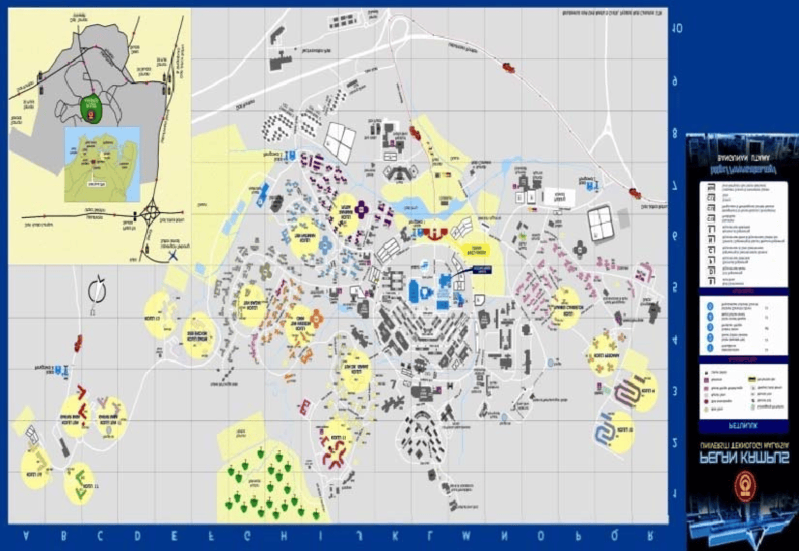
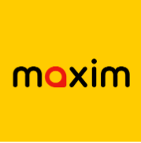
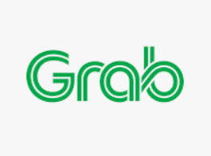
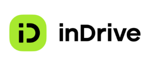
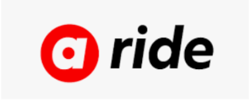
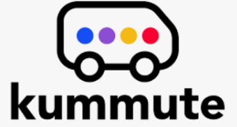
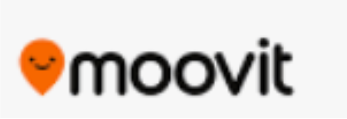

手册
校园地图

国际访客抵达马来西亚
来自外国的访客
从柔佛新山国际机场到UTM
大多数国际学生会通过士乃国际机场(Senai International Airport)抵达。从机场到UTM有以下选择：
1. 网约车服务
- 建议使用Grab、Maxim、inDriver或AirAsia Ride
- 价格根据路况、时段及天气情况会有所不同
- 提前在手机上安装相关应用
2. 租车自驾
从吉隆坡到UTM
1. 空中交通
- 从吉隆坡国际机场(KLIA)乘坐国内航班飞往士乃国际机场
2. 陆路交通
校内外交通服务
1. Bas Muafakat Johor（柔佛免费巴士）
- 这是柔佛州政府和地方政府资助的免费巴士服务
- 需持有Kad Muafakat Johor (KMJ)卡或本地IC卡才能使用
- P211路线会进入UTM校区，经过UTM lingkaran ilmu的Centre Point以及SKE对面操场
- 起点是Terminal Taman U，终点是Larkin Central
- 注意：此服务到晚上11点后就没有到UTM校区了
2. Larkin Sentral（拉欣中央车站）
- 可通过Bas Muafakat Johor P211巴士前往UTM
- 需持有Kad Muafakat Johor/IC
电召出租车服务
UTM学生常用的网约车服务：

- 费用相对便宜，但出租车数量较少
- 可能需要较长等待时间

- 出租车数量多，但价格会有额外费用
- 学生可与朋友共乘减轻经济负担


5. Kummute

- 较新的电召车服务，价格较实惠，载送范围也比较局限
- 服务范围与UTM JB校区内各大巴士站、大学城以及UTM JB校区外部分区域
- 营业时间为早上7:30至晚上7:30（星期日至星期四）或早上8时（星期五和星期六）
- 在UTM JB校区内的载送费用通常是RM1至RM3不等
- 主要使用小型货车运载，不接受现金支付，只能使用Kumpool Wallet
实用应用程序
- 一款查询附近交通的应用程序
- 可作为Bas Muafakat Johor个人化旅行指南
- 可在界面规划巴士转站路线及查询巴士实时位置和到站时间
- 可在App Store、Play Store及AppGallery下载

- 一款全球知名的公共交通导航应用
- 提供实时公交信息和详细路线规划功能
- 支持多种语言界面，非常方便国际访客使用
- 可显示公交路线、站点位置和预计到达时间
- 部分功能可离线使用，对没有当地网络的访客很有帮助
- 适用于巴士、地铁、轻轨等多种公共交通方式
- 可在App Store和Google Play商店下载
注意事项
1. 预先准备
- 提前下载并注册相关交通应用
- 准备足够的马币现金（特别是对于刚到达的国际访客）
- 查询并保存重要地点的地址（如UTM校区内的比赛场地）
2. 交通卡
3. 时间安排
- 考虑交通可能的延误，建议提前规划行程
- 特别是在高峰时段，预留足够的交通时间
4. 校内导航
- UTM校区较大，建议使用校园地图或询问校内指引
- 比赛参与者可向组织方询问校内指定接送点
5. 紧急联系
Where u wanna go
This is the content for Wheere u wanna go.
{kind=link}